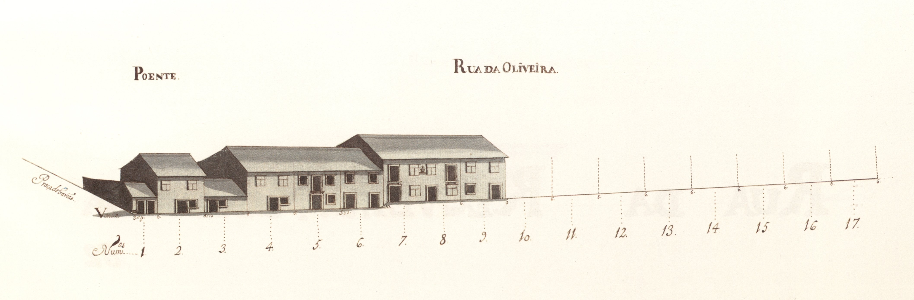

Rua da Oliveira - Vista nascente.

Rua da Oliveira - Vista poente.
Pertencente ao complexo urbanístico do campo Novo , ligava esta praça ao local actualmente chamado largo das Teresinhas . Uma pequena artéria, denominada Cangosta para a rua de Santa Margarida , permitia a passagem para a igreja de S. Vicente e capela de Guadalupe .
Aberta também em 1725 era, nesta data, uma rua cujos edifícios estavam em construção. No Mapa há 22 casas já levantadas e 13 «chãos» para edificarem.
Os prédios que vemos são de um piso (59%) ou dois, bastante semples, sendo a maior parte (59%) do tipo com porta ladeada de janela no piso térreo. A linha de empenas é irregular, quebrada e as janelas ou são vazadas, ou são do tipo bracarense. Também aqui não há o rigor da marcação de janelas altas e portas, da praça do Gavião ; são antes casas avulsas que tiveram o desenho de fachada desejado pelo morador, sem preocupações de conjunto ou de integração. Não deixa de ser curioso notar, contudo, a sequência vertical de porta e janela alta nas casas dos prazos 5 e 7, ou até a janela alta do prazo n.º 8, a lembrar aquela praça.
As 14 do lado Nascente e 8 do Poente são todas prazos do Cabido .
Mantém a designação de rua das Oliveiras .
Rua da Oliveira - Vista nascente.
Rua da Oliveira - Vista poente.
| Número da Casa | Enfiteuta | Foro | Descrição |
|---|---|---|---|
| 1 | D. Agostinho Maria de Barros Gavião, enfiteuta principal do prazo do casal dos Chãos ou Quinteiro. | Foro não encontrado | |
| 2 | D. Agostinho Maria de Barros Gavião, enfiteuta principal do prazo do casal dos Chãos ou Quinteiro. | Foro não encontrado | |
| 3 | D. Agostinho Maria de Barros Gavião, enfiteuta principal do prazo do casal dos Chãos ou Quinteiro. | Foro não encontrado | |
| 4 | D. Agostinho Maria de Barros Gavião, enfiteuta principal do prazo do casal dos Chãos ou Quinteiro. | Foro não encontrado | |
| 5 | D. Agostinho Maria de Barros Gavião, enfiteuta principal do prazo do casal dos Chãos ou Quinteiro. | Foro não encontrado | |
| 6 | D. Agostinho Maria de Barros Gavião, enfiteuta principal do prazo do casal dos Chãos ou Quinteiro. | Foro não encontrado | |
| 7 e 8 | D. Agostinho Maria de Barros Gavião, enfiteuta principal do prazo do casal dos Chãos ou Quinteiro. | Foro não encontrado | |
| 9 | D. Agostinho Maria de Barros Gavião, enfiteuta principal do prazo do casal dos Chãos ou Quinteiro. | Foro não encontrado | |
| 10 a 17 | D. Agostinho Maria de Barros Gavião, enfiteuta principal do prazo do casal dos Chãos ou Quinteiro. | Foro não encontrado | |
| 18 a 22 | D. Agostinho Maria de Barros Gavião, enfiteuta principal do prazo do casal dos Chãos ou Quinteiro. | Foro não encontrado | |
| 23 a 28 | D. Agostinho Maria de Barros Gavião, enfiteuta principal do prazo do casal dos Chãos ou Quinteiro. | Foro não encontrado | |
| 29 | D. Agostinho Maria de Barros Gavião, enfiteuta principal do prazo do casal dos Chãos ou Quinteiro. | Foro não encontrado | |
| 30 | D. Agostinho Maria de Barros Gavião, enfiteuta principal do prazo do casal dos Chãos ou Quinteiro. | Foro não encontrado | |
| 31 | D. Agostinho Maria de Barros Gavião, enfiteuta principal do prazo do casal dos Chãos ou Quinteiro. | Foro não encontrado | |
| 32 | D. Agostinho Maria de Barros Gavião, enfiteuta principal do prazo do casal dos Chãos ou Quinteiro. | Foro não encontrado | |
| 33 e 34 | D. Agostinho Maria de Barros Gavião, enfiteuta principal do prazo do casal dos Chãos ou Quinteiro. | Foro não encontrado | |
| 35 | D. Agostinho Maria de Barros Gavião, enfiteuta principal do prazo do casal dos Chãos ou Quinteiro. | Foro não encontrado | |
| 36 | D. Agostinho Maria de Barros Gavião, enfiteuta principal do prazo do casal dos Chãos ou Quinteiro. | Foro não encontrado |

Rua Da Oliveira

Rua Da Oliveira